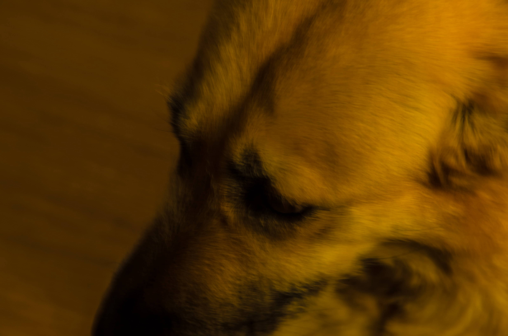
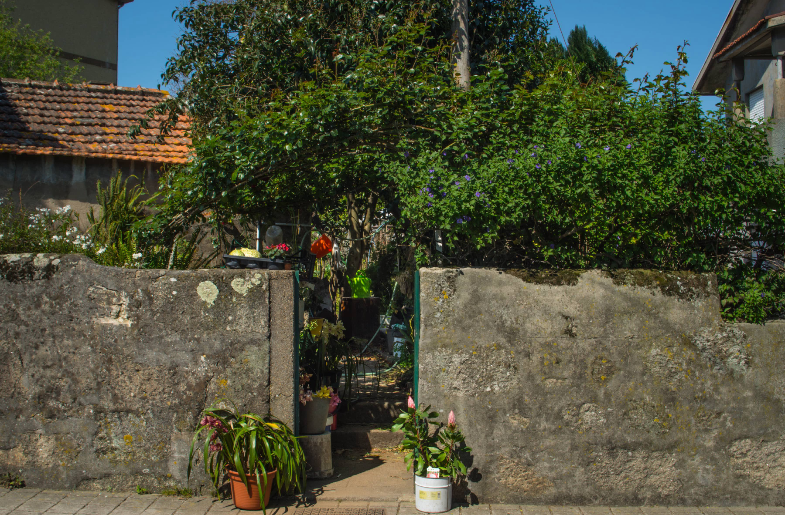

Sobre mim
Deixe-me dizer-lhe algumas coisas...



Chamo-me Miguel Pereira, e sou web-designer, musico e guionista amador. A viver no grande Porto desde
2016, aqui fui expandindo a
minha palete de gostos, e vi finalmente alguns dos meus projectos de sonho serem concretizados.
Consegui concluir e editar o meu primeiro
album, unico até ao momento, mas planeio fazer com que mais venham no seu encalço; infelizmente o
dia não tem horas suficientes para
tudo o que se quer fazer, e uma pessoa precisa de ganhar dinheiro,
algo com que praticamente toda
a gente se pode relacionar -, o
que significará que os projectos extra-curriculares têm muitas vezes de ser relegados para
segundo
plano.
O album, de seu nome A
Violet Wind, conta com uma palete de sons bastantes alargada, com uma especial enfase de
género
na
musica ambiente. Gosto de musica
que me proporcione uma atmosfera carregada, que tenha o seu próprio centro de gravidade, o
que
muitas vezes consegue tornar aquilo que
os olhos veem e que o corpo sente em meras extensões de si própria; consegue fazer do
escapismo
não
apenas escapismo, mas uma quase
super-realidade, em que a mesma é amplificada e interligada com aquilo que o subconsciente
retira da
música. Tem-me parecido a mim que
são os generos que se mantêm mais ao extremo de todo o espectro musical conhecido, os mais
efectivos
para conseguir tais sensações; o
ambiente, o noise, a repetição; musica que arrepia por o quão intensa é, ou pela história
que
conta... são os outliers que muito
demonstram sobre o ser humano. Coisas dessas prendem-me o interesse, fazem-me pensar (mas
nem
sempre), de uma forma diferente da habitual, e muito tenho eu a agradecer a todos os
artistas
que se
importam verdadeiramente. Tanto na musica como em qualquer outra área criativa, a intenção
não é
tudo mas conta muito.
Falemos então um pouco sobre cinema e guionismo. Ambos estão intimamente conectados, e são,
a
meu
ver, a forma mais prática de contar uma história complexa - ainda que, como toda a boa arte,
de
facilidades, estes certamente não são feitos. Ora foi assim: começei por me aventurar nesta
área
depois de uma ida particularmente impressionante ao cinema, e depois da obrigatória
auto-duvida
que
nunca chega verdadeiramente a desaparecer, uma cena para um guião que eventualmente se
chamaria
de
Kennel desenhou-se na minha mente, com os seus atributos surpreendentemente expostos: cor,
som,
diálogo, personagens, surroundings, posicionamento de camera, etc; como se tivesse estado lá
guardada já há imenso tempo, apenas à espera de um pequeno empurrão para sair. Passado três
meses
havia concluido o meu primeiro guião. O canil titular é verde, e tem uma realidade definida,
mas
sim, é também amorfo e bastante figurativo. Podem ler, estejam á vontade, estão mais do que
convidados. Terminado este, surgiu a motivação para começar outro. Assim foi, e a motivação
foi
amadurencendo e tranfigurando-se em certeza de conclusão. E assim foi, mais uma vez. Mais
virão,
mais se estão a produzir.
Mas nem tudo é puramente diversão e hobbie. Passemos ao web design. Adopto aqui uma posição
mais
pragmática: sem dinheiro é muito dificil viver. Sem dinheiro é dificil constituir familia.
Sem
dinheiro não conseguirei continuar com os meus projectos. A lógica de tudo isto é clara. Mas
calma
lá. Não se julgue que sou web-designer apenas pela prespectiva de uma vida monetariamente
segura. O
web-design força-me a pelo menos duas coisas: constante aprendizagem, e toque criativo. Por
mim
tudo
bem, já que aprender contribui para a sensação de motivação (e motivação é o que temos de
mais
próximo de felicidade), e criatividade... bem, de criatividade penso que já se falou o
suficiente
para o propósito desta pequena apresentação. Web-design é muito simplesmente o meu elo de
ligação;
junta o util ao agradável e confere-me uma rotina, que ao contrário do que alguns dizem, é
util
para
manter os pés assentes na terra. Há quem o consiga sem ela, mas não me parece que eu seja
uma
dessas
pessoas; preciso de algo que me prenda a corda, porque senão corro o perigo de me dispersar
demasiado.
Espero que me concedam uma oportunidade e estejam á vontade para observarem alguns dos meus
projectos.
Competências:
Website design
Full stack
Criação de websites com html, css, javascript, php. Front-end e back-end design; estruturação de base de dados com mySql e MongoDb. Conheçimentos elementares de NodeJs e frameworks como ReactJs, Express, e Laravel.